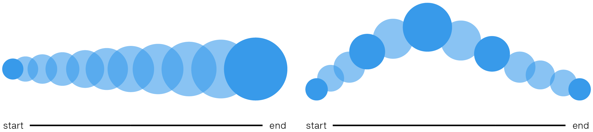

Purposeful, well-designed animations bring an interface to life and make the experience feel crafted and polished. Animated transitions can help users understand and later recall how the interface works and how the components fit together. Nothing feels more unnatural than a sudden change.

Animated transitions
A transition occurs when an element changes from one state to another, with a sequence of in-between frames. It has a beginning and an end state, and can have more in-between states. Changes in an object’s speed and direction draw the users’ attention. Asymmetric acceleration and deceleration creates a more natural and delightful motion.
In some cases, animated transitions can also make an interface feel more responsive, even when the transition takes the same amount of time. Care must be taken to avoid animated transitions to slow down an application.
Smooth and responsive
ABB aims to deliver professional software, where transitions and animations should only be used to support user interaction and system flow. They should not be used as a gimmick or for decorative purposes.
Transitions and animations should not be disturbing or annoying, but rather contribute to the overall experience of a smooth, reliable and responsive system.